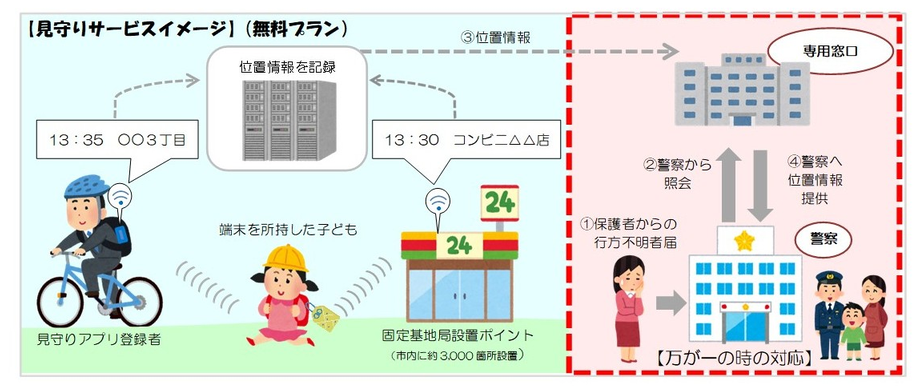
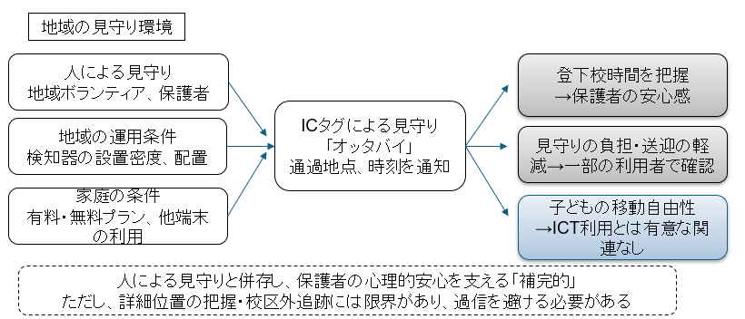
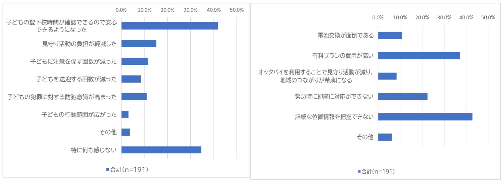

ICTによる見守り
ICT（BLE型）による見守りを保護者、子どもはどう思っているのか。
子どもの登下校時の安全を守るため、これまで地域のボランティアや保護者による見守り活動が行われてきました。しかし近年は、見守り活動を担う人の高齢化や人手不足により、これまでと同じ形で活動を続けることが難しくなっています。その一方で、「登下校防犯プラン」の中にもあるように、子どもの登下校をICTで見守るサービスを導入する自治体も出てきています。
ＩＣＴ（ＢＬＥ型）を利用した子どもの見守り
近年ICタグ等ＩＣＴを活用した子どもの見守りが都市部を中心に行われており、主にGPS型とBLE型に分類できます。ここでは福岡市と大野城市で導入されている子ども見守りサービス「オッタバイ」を取り上げます。オッタバイは、子どもが持つICタグが通学路や校区内に設置された検知器を通過したときに、その場所と時刻を記録し、保護者が子どもの登下校状況を確認できる仕組みです。GPS型のように常に子どもの居場所を追跡するものではなく、登下校中の通過情報を確認するのが特徴です。また「見守り人アプリ」をスマートフォンにインストールすると、検知器となり地域の人も見守りができる仕組みになっています。このようなICTによる見守りが、保護者にどのように受け止められているのか、また利用する上でどのような課題があるのかを明らかにするため調査を行いました。

「オッタバイ」を導入している自治体に居住する保護者、小学生にたずねました
2024年11月から12月にかけて保護者と小学生へのアンケート調査を行いました。有効回答は、福岡市227名、大野城市151名の計378名、小学生は大野城市の5，6年児童が対象で134名でした。保護者アンケートでは、オッタバイの利用状況、サービスに対する評価、感じている課題、地域の見守り活動の状況、子どもの単独行動に対する保護者の考え方などを尋ねました。
「オッタバイ」に対する評価
オッタバイに対する評価として最も多かったのは、「子どもの登下校時間が確認できるので安心できるようになった」という回答でした。特に有料プランを利用している保護者では、このような安心感を得ている傾向が強くみられました。つまり、オッタバイは、子どもの行動を大きく変えるというよりも、保護者が「無事に登校した」「学校を出た」と確認できることで、心理的な安心につながっていると考えられます。一方で、「見守り活動の負担が軽くなった」、「子どもの行動範囲が広がった」といった評価は、一部の保護者に限られていました。課題としては、「詳細な位置情報を把握できない」「有料プランの費用が高い」といった回答が多くみられ、保護者の中には、もっと詳しい位置情報を知りたいと感じる人もみられました。さらに、福岡市居住の回答者では、ICTを使うことで地域の見守り活動が減り、人と人とのつながりが弱くなるのではないかという不安も確認されました。ただし、実際には有料プランを利用している保護者の地域で、地域ボランティアによる見守り活動も比較的活発である傾向がみられました。
大野城市の小学生高学年の調査では、「登下校時に大人に見守りをして欲しい」との回答が約半数ありました。高学年ということもあり、オッタバイを利用したことのある回答者は約2割にとどまったものの、「事件や事故に巻き込まれたときに役立ちそう」とほとんどの所持経験者が回答していました。また「保護者に自分の居場所を知られることは安心だと思っている」と回答したのは8割となっており、今回の調査ではICタグを持つことで子ども自身がプライバシーを侵害されているという意識は確認されませんでした。


実践への示唆：子どもの見守りは、人による見守りとICTの組み合わせで進める
今回の調査結果から、オッタバイは子どもの行動範囲を広げたり、地域の見守り活動を置き換えたりするものではなく、登下校時間を確認できることで保護者の安心感を支えるサービスであることが分かりました。つまり、ICTは人による見守りの代わりになるというより、地域や家庭で行われている見守りを補う役割を持っていると考えられます。一方で、費用負担、位置情報の詳しさ、地域による検知器の設置状況の違い、ICTへの過信、地域のつながりが弱まることへの不安など、今後検討すべき課題も残されています。子どもの安全を守るためには、ICTだけに頼るのではなく、地域の人による見守りとICTをどのように組み合わせるかが重要と考えます。今後は、保護者や地域の人々に対して、ICTによる見守りの特徴や限界を分かりやすく共有し、人による見守りとICTが互いに補い合う仕組みを考えていく必要があります。